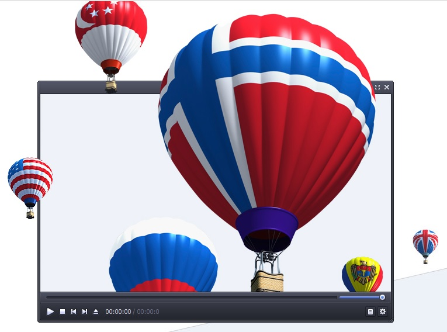
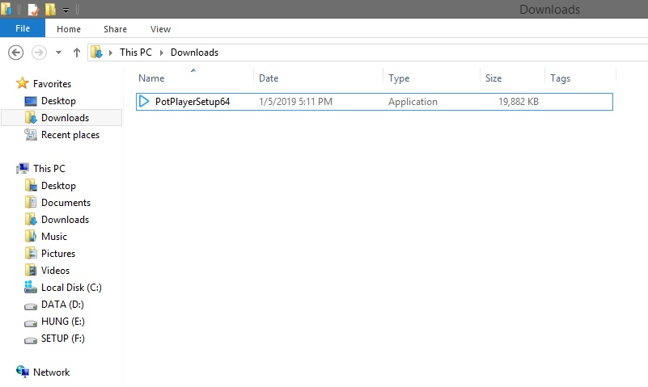
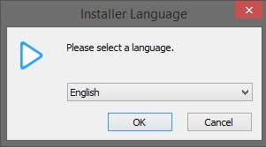
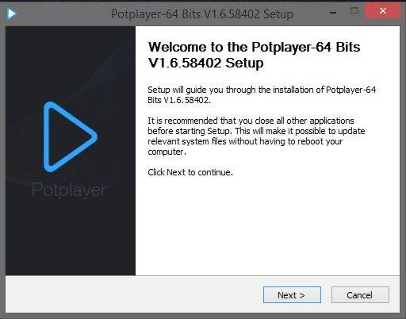
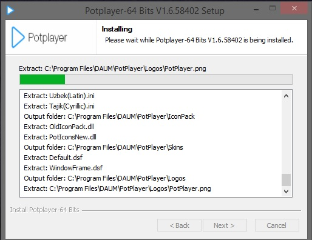
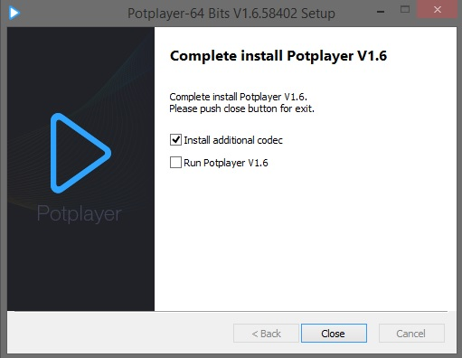
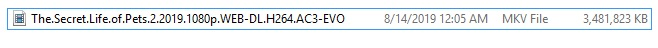
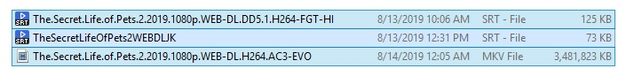
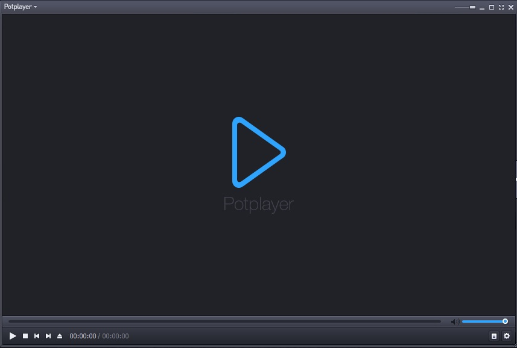

text2
Xem phim phụ đề song ngữ
Aug 17, 2019 | FILMS | 17Một phương pháp rất tốt để vừa giải trí lại vừa có thể học ngoại ngữ. Bạn đã thử chưa !
Lời mở đầu:Hey Guy !
Lại một hôm lang thang trên Facebook và tui nhìn thấy cái hay ho này. Sử dụng một ứng dụng tên là Port Player làm trình phát video và bạn có thể thưởng thức 1 bộ phim phụ đề song ngữ, vừa giải trí vừa học tiếng anh lun ^^

Okay bắt đầu thôiĐầu tiên phải Download và Install đã:
Download Port Player
Sau khi Download xong, ta sẽ có một file như thế này:

Tiến hành mở file và cài đặt thôi nào, chọn English nhé:
Rồi cứ Next và Install thôi

And waiting ...

Nhớ cài thêm cả bộ codec để chạy được nhiều định dạng video nhé:

Thế là xong phần cài đặt rồi, đến bước tiếp theo thôi.Bạn cần phải chuẩn bị file Film và các file Subtitle nhé.
Hiện nay thì có nhiều trang web phim lậu, mang đại đại về mà xem. Ở đây tui hướng dẫn cách bạn một cách tải film gần như là nguyên bản luôn, mà không chỉ film mà các phần mềm, tool,... bạn đều có thể download ở website này. Vô link đây: https://1337x.to/
Có một vẫn đề nhỏ nhỏ là trang Web này chỉ cho phép bạn download link Torrent. Nhưng chả có gì phải lo cả vì trình duyệt Cốc Cốc made in Vietnam cho phép bạn tải file bằng link Torrent với tốc độ khá cao.
Ok giờ còn lại là phần Subtitle. Bạn vô trang web này nhé: https://subscene.com/. Việc lựa chọn Subtitle phù hợp với phim cũng rất quan trọng. Thông thường, bạn download 1 phim về sẽ có tên thế này:

Trong đó, phần đầu là tên phim, sau là độ phân giải, chất lượng, âm thanh,... Vậy nên khi chọn Subtitle các bạn cũng cố chọn tên giống hoặc gần gần với phim, nếu không thì phim với Sub sẽ lệch nhau ko xem được.

Mở Port Player lên thôi. DarkMode nhìn ngầu nhở ^^ 
Đầu tiên, bạn mở phim lên trước. Click Chuột phải chọn Open File thôi hoặc phím tắt Ctrl + O.
Mà thôi, xem luôn hướng dẫn ở bên dưới đi:
Lời kết:
Thôi mệt lắm éo muốn viết nữa. Chúc bạn xem phim vui vẻ.
Tạo ổ đĩa cứng ảo Google Drive với Raidrive